1과목: 유통물류일반
1. 유통경로에서 중간상이 필요한 이유에 대한 설명으로 가장 옳지 않은 것은?
2. 유통 및 유통경로에 대한 설명으로 가장 옳지 않은 것은?
3. 비슷한 수준의 능력을 가진 두 사람이 같이 4시간씩 일하였는데, 갑은 4만원을 받고 을은 8만원을 받았다. 공정성이론(equity theory)에 근거하여 볼 때, 두 사람이 보일 수 있는 반응과 가장 거리가 먼 것은?
4. LIBOR나 Prime Rate 또는 CD 금리와 같이 금융시장에서 대표적인 지표금리와 연동하여 이자를 계산하는 채권으로 옳은 것은?
5. 경로구성원들이 유통경로구조를 설계할 경우 고려해야 할 요인들에 대한 설명으로 가장 옳지 않은 것은?
6. 아래 글상자에서 설명하는 경로구조 결정 이론으로 옳은 것은?
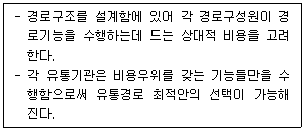
7. 매장의 유통비용 및 이윤을 파악하는 방안으로 가장 옳지 않은 것은?
8. 소매업의 발전과정을 나타내는 다양한 이론들에 대한 설명으로 옳지 않은 것은?
9. 아래 글상자의 괄호 안에 들어갈 유통경로 경쟁으로 가장 옳은 것은?
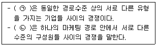
10. 매출에 영향을 미치는 외적 환경요인에 해당하는 것만을 나열한 것으로 가장 옳은 것은?
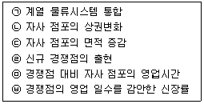
11. 아래 글상자에서 유통기업의 인수 및 합병(M&A) 주요 동기를 모두 고르면?
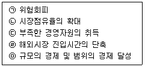
12. 조직 내의 의사소통을 개선하는 방안으로 가장 옳지 않은 것은?
13. 소매업의 상품관리 성과를 측정하기 위한 생산성 지표로 활용할 수 있는 것들만으로 바르게 짝지어진 것은?
14. 아래 글상자의 괄호 안에 들어갈 기업이 계약을 통해 해외에 진출하는 방법을 순서대로 바르게 나열한 것은?
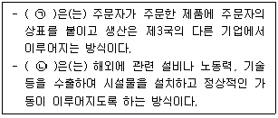
15. 자재소요계획(MRP) 시스템의 주요 장점에 대한 설명으로 옳지 않은 것은?
16. 유통경로에서 발생하는 갈등의 원인을 태도에서 기인하는 것과 구조적 원인으로 구분할 때 다음 중 구조적 원인에 의한 갈등으로 옳은 것은?
17. 아래 글상자에서 유통기업 윤리경영의 발전단계 순서가 옳게 나열된 것은?
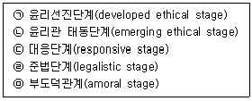
18. 상품의 구색을 회전율 위주로 구성하였을 때, 높은 재고회전율의 장점으로 옳지 않은 것은?
19. 아래 글상자의 내용 중 소비자를 위한 소매상의 기능으로 옳은 것만을 나열한 것은?
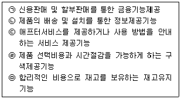
20. 일관팔레트화의 경제적 효과에 관한 설명으로 옳지 않은 것은?
21. 창고의 다양한 기능에 대한 설명 중 가장 옳지 않은 것은?
22. 복합운송인의 기능에 대한 설명으로 가장 옳지 않은 것은?
23. 국제물류의 개념 및 특성에 관한 설명으로 가장 옳지 않은 것은?
24. 아래 글상자에서 물류고객서비스요소 중 거래요소에 해당하는 것만을 모두 골라 나열한 것은?
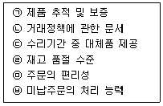
25. 전자문서 및 전자거래 기본법 [법률 제18478호, 2021. 10. 19., 일부개정]에서 사용하는 용어의 뜻으로 옳지 않은 것은?
2과목: 상권분석
26. 우리나라의 소매입지 및 상권과 관련된 최근의 환경적 특징에 관한 설명으로 가장 옳지 않은 것은?
27. 개별 소비자 각각의 공간적 분포상황을 조사하여 상권경계를 설정하는 데 활용할 수 있는 상권분석 방법으로 가장 옳은 것은?
28. 개점계획은 점포개설을 위한 투자계획을 포함한다. 다음 중 일정 기간 이후의 수익을 고려하지 않는 수익성분석기법으로 가장 옳은 것은?
29. 소매점 개점계획의 내용을 사업전략과 출점계획으로 구분할 때 다음 중 출점계획의 내용으로 가장 옳지 않은 것은?
30. 지리정보시스템(GIS)을 이용한 상권분석과정에서 점, 선, 면 등의 표현에 활용되는 벡터(vector)와 래스터(raster)는 다음 중 어느 것과 관련성이 가장 높은가?
31. 아래 글상자의 항목 중 상권분석에서 고려해야 할 지역 및 상권 정보를 모두 포함한 내용으로 가장 옳은 것은?
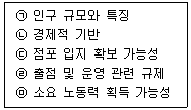
32. 레일리(W. J. Reilly)의 소매중력법칙은 도시상권의 흡인력 외에도 광역상권을 갖는 쇼핑센터나 백화점 등의 상권의 매력도를 추정하는 데 실무적으로 활용된다. 이와 관련한 설명으로 가장 옳지 않은 것은?
33. 점포의 입지결정이나 상권분석에 회귀분석모델을 활용할 때의 장·단점에 대한 설명으로 옳지 않은 것은?
34. 다음 중 고객 스포팅 기법(CST: Customer Spotting Technique)을 통해 얻을 수 있는 정보로서 가장 옳지 않은 것은?
35. 입지선정을 위해 통행량이나 유동인구를 조사할 경우에 유념하여야 할 사항으로 옳지 않은 것은?
36. 입지유형에 따라 소매점포를 도시형점포, 교외형점포로 구분할 수 있다. 관련된 입지유형이 나머지들과 다른 고객유도시설로 가장 옳은 것은?
37. 안정적인 유동인구와 쾌적한 쇼핑환경 등의 특성 때문에 음식점, 패스트푸드점, 화장품점, 의류점 등이 다수 입지하고 있는 군집입지의 특수상권에 대한 일반적 설명으로 가장 옳지 않은 것은?
38. 아래 글상자에서 유사한 입지특성을 갖는 점포의 매출액을 주요 자료로 신규점포의 매출액을 추정하는 방법만을 나열한 것으로 가장 옳은 것은?
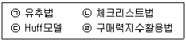
39. 다음 중 다수 점포가 집적한 군집입지의 매력도를 감소시키는 입지 평가 원칙으로 가장 옳은 것은?
40. 소매점포의 입지조건에 대한 일반적 평가로서 그 내용이 가장 옳지 않은 것은?
41. 다음 중 국내에 거주하는 내국인 개인이 사업자등록을 신청하는 경우의 절차와 내용에 관한 원칙적인 설명으로 가장 옳지 않은 것은?
42. 프랜차이즈 시스템에 가입하여 출점하는 가맹점(franchisee) 점주가 얻을 수 있는 직접적 혜택으로 가장 옳지 않은 것은?
43. 다음 중 목적점포와 기생점포에 대한 설명으로 가장 옳지 않은 것은?
44. 다음 중 집재성 점포로서 가장 어울리지 않은 것은?
45. 상권분석의 초기단계에서 어느 지역의 개략적 수요를 비교적 간단하게 추정하는 분석수단인 구매력지수(BPI)를 계산하는 과정에서 필요한 지역시장과 전체시장의 자료가 아닌 것은?
3과목: 유통마케팅
46. 세분시장의 매력성이 낮은 경우로 옳지 않은 것은?
47. 다음 중 소매점의 업태 선정에 해당하는 마케팅전략으로 가장 옳은 것은?
48. 아래 글상자의 온라인 배너광고에 대한 설명 중 옳지 않은 것만을 나열한 것은?
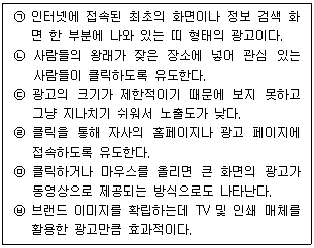
49. 다음 중 제품수명주기에 따른 유통전략으로 가장 옳지 않은 것은?
50. 아래 글상자의 괄호 안에 들어갈 용어로 가장 옳은 것은?
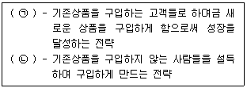
51. 브랜드 인지와 관련하여 자사제품의 브랜드를 가장 먼저 떠올린 응답자가 전체 중 어느 정도인지 의미하는 용어로 가장 옳은 것은?
52. 다음 중 단품관리의 기대효과로 가장 옳지 않은 것은?
53. 고객이 온라인 서비스에 접속한 후 상품을 구매하기까지의 과정을 단계별로 나누어 깔때기 모양으로 시각화한 고객구매여정모델로서 옳은 것은?
54. 다음 중 고객 심리와 행동에 의해 형성된 가격과 관련된 용어의 설명으로 가장 옳지 않은 것은?
55. 촉진관리를 위한 마케팅 커뮤니케이션 수단들에 대한 아래의 설명 중에서 옳지 않은 것은?
56. 아래 글상자의 내용을 의미하는 용어로 가장 옳은 것은?
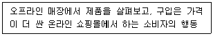
57. 소비재는 일반적으로 편의품, 선매품 그리고 전문품으로 구분된다. 전문품에 대한 설명으로 가장 옳은 것은?
58. 다음 중 특정 상품에 대한 관심과 사용에 기반하여 사회적 관계를 맺고 있는 소비자집단으로 가장 옳은 것은?
59. 미디어 믹스에 대해 설명한 아래 글상자의 ㉠과 ㉡에 해당하는 용어의 짝으로서 옳은 것은?
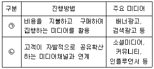
60. 아래 글상자의 괄호에 공통적으로 들어갈 디지털 마케팅에서의 성과지표로 가장 옳은 것은?
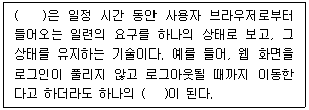
61. 다음 중 소매점포 공간계획을 수립할 때 가장 먼저 고려해야 할 요인으로 옳은 것은?
62. 고객이 구매를 많이 하도록 특정 품목을 매장의 어떤 선반이나 진열대에 어떻게 배치해야 하는지를 보여주는 다이어그램으로 옳은 것은?
63. 매장 레이아웃의 기본원칙으로 가장 옳지 않은 것은?
64. 서비스삼각형(service triangle) 이론에서 종업원이 고객과 직접 접촉을 통해 기업이 고객에게 제공하기로 약속한 제품 및 서비스를 실제로 제공하는 마케팅을 의미하는 용어로 가장 옳은 것은?
65. 다음 중 고객생애가치에 대한 설명으로 가장 옳지 않은 것은?
66. 다음 중 운영CRM전략을 수행하는 고객상호작용센터에 대한 설명으로 가장 옳지 않은 것은?
67. 조사에 사용된 여러 가지 변수들을 유사한 변수들끼리 묶어 적은 수의 차원으로 축소시키는 데 사용되는 통계기법으로 옳은 것은?
68. 다음 중 고객관계관리(CRM)에 관한 설명으로 가장 옳지 않은 것은?
69. 아래 글상자에서 설명하는 외생변수로서 가장 옳은 것은?
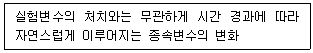
70. 아래 글상자에서 설명하는 용어로 옳은 것은?
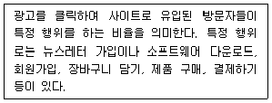
4과목: 유통정보
71. 아래 글상자에서 설명하는 의사결정지원기법으로 가장 옳은 것은?
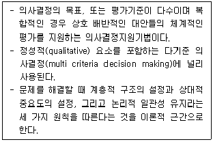
72. 아래 글상자의 괄호 안에 들어갈 용어로 가장 옳은 것은?
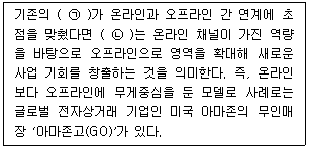
73. 아래 글상자의 괄호 안에 들어갈 용어로 가장 옳은 것은?
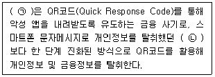
74. 인공지능은 오용될 경우 많은 역기능을 유발하기에 이에 대한 규제가 필요하다. 이에 따라 제정된 “인공지능 발전과 신뢰 기반 조성 등에 관한 기본법(약칭: 인공지능기본법)”의 내용으로 가장 옳지 않은 것은?
75. 아래 글상자에서 QR코드에 대한 설명으로 옳지 않은 것만을 나열한 것은?
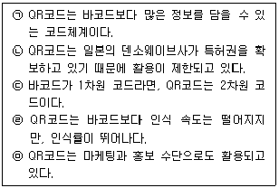
76. 상거래와 관련된 식별을 위한 글로벌 표준 코드의 종류와 그 내용이 가장 옳은 것은?
77. 배송시스템은 배송업체의 개별적인 여건과 배송되는 제품특성에 따라 생산자 집약형 배송시스템과 프랜차이즈 방식의 배송시스템, 그리고 택배 서비스로 구별해 볼 수 있다. 아래 글상자에서 생산자 집약형 배송시스템의 장단점을 모두 나열한 것으로 옳은 것은?(오류 신고가 접수된 문제입니다. 반드시 정답과 해설을 확인하시기 바랍니다.)
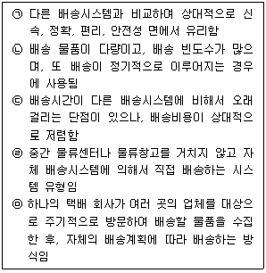
78. GS1 유통표준코드는 대한상공회의소 유통물류진흥원(GS1 Korea)에서 발급받아 사용할 수 있다. GS1 유통표준코드를 상품에 적용할 때 신제품으로 판단되는 사례로 가장 옳지 않은 것은?
79. 아래 글상자의 내용에서 괄호 안에 들어갈 용어로 가장 옳은 것은?
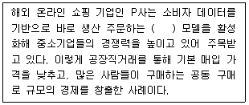
80. 2025. 3. 13. 시행 개인정보 보호법 시행령에서 정보주체가 개인정보 전송을 요청할 수 있는 정보전송자로 규정한 대상으로 가장 옳지 않은 것은?
81. 고객충성도 프로그램과 관련된 내용으로 가장 옳지 않은 것은?
82. 아래 글상자는 빅데이터의 처리절차를 나타낸 것으로 괄호 안에 들어갈 절차에 대한 내용으로 가장 옳은 것은?
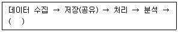
83. CRM에 적용되는 기술 가운데 아래 글상자에서 설명하는 내용과 부합하는 기술로 가장 옳은 것은?
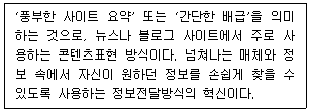
84. 유통업체에서의 생성형 인공지능 기술 활용이 증가하고 있다. 다음 생성형 인공지능 기술 활용에 대한 설명으로 가장 옳지 않은 것은?
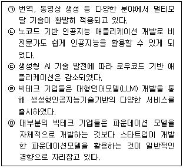
85. 성공적인 SCM 구축을 통해 기업이 얻을 수 있는 기대효과에 대한 설명으로 가장 옳지 않은 것은?
86. 아래 글상자의 내용을 읽고 괄호 안에 들어갈 용어로 가장 옳은 것은?
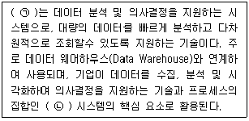
87. 성공적인 기업 운영을 위해 디지털 경제사회에서 갖추어야 할 비즈니스 사고 방식의 패러다임으로 가장 옳지 않은 것은?
88. ERP 시스템 구현 시 기업 환경에 따라 클라우드(cloud)ERP 시스템과 온프레미스(on-premise) ERP 시스템방식을 고려할 수 있다. 이 중 클라우드 컴퓨팅 기반의 ERP 시스템을 선호하는 기업의 특징으로 가장 옳지 않은 것은?
89. 스마트 물류 구현을 위한 통신기술에 대한 설명으로 옳지 않은 것은?
90. 디지털 핵심기술 중 하나로 아래 글상자에서 설명하는 내용과 부합하는 기술로 가장 옳은 것은?
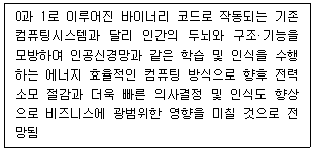